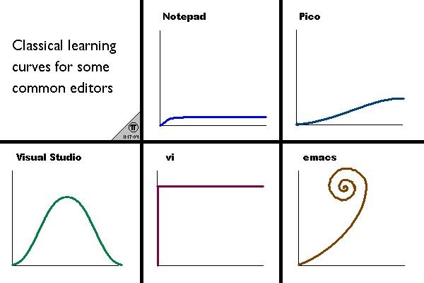
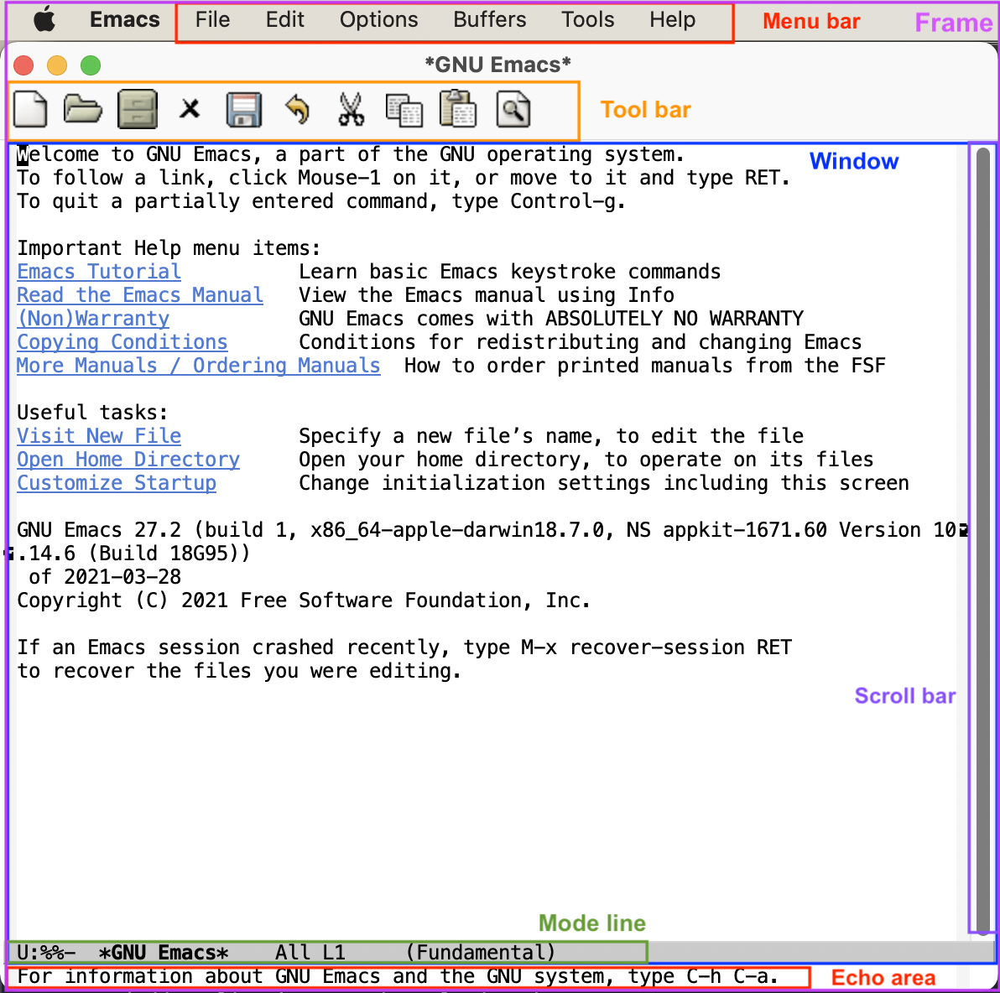

Church of Emacs!
Table of Contents
1. 什么是 Emacs？
它是一个伪装成文本编辑器的操作系统！
1.1. Emacs 的历史
1960s-1970s: Emacs 的历史可以追溯到 1960 年代后期，那个时代的文本编辑器通常是高度定制化的。
例如，MIT 的人工智能实验室使用一个名为 TECO (Text Editor and Corrector) 的文本编辑器。
1976 年: Richard Stallman （RMS） 和 Guy L. Steele Jr. 在 MIT 人工智能实验室开发了最早版本的 Emacs。
他们的目标是创建一个高度可扩展且用户友好的编辑器，于是将 TECO 作为基础，并加入了宏功能。 Emacs 是 GNU 项目重要的组成部分之一，也是当时自由软件运动的一个重要里程碑。
RMS 的帅照（
Emacs 是一个文本编辑器系列，包含有多个分支，其中最主流的一支是 GNU Emacs，大多数情况下所说的 Emacs 都是指 GNU Emacs。
Emacs 这一名字最早来源于 “Editor MACroS”，后来也有人称它集合了五个主要功能键的首字母 Esc、Meta、Alt、Ctrl、Shift。
Emacs 的主要思路是大量依赖组合快捷键实现高效编辑，这直接导致了想要流畅使用 Emacs 必须要记忆 Emacs 的大量快捷键，需要相当一段时间熟悉。
此外，Emacs 编辑器本身所使用的编程语言是 Emacs Lisp 语言，Lisp 语言的方言之一。 Lisp 语言是诞生于 1958 年的世上第二古老高级程序设计语言，其语言以“列表”（List）作为语法和核心数据结构，由于其具备强大的宏系统，可以创造各式方言，Emacs Lisp 就是其中之一。
这个语言相对于我们常见的编程语言来说，晦涩难懂，同样增加了 Emacs 的学习难度。网上流传着一个有趣的形容各个编辑器学习曲线的图片：

1.2. 编辑器圣战
Emacs 与 Vi 共同被称为最古老的 Unix 编辑器，一代代程序员对 Emacs 和 Vi （尤其后来出现的 Vim）产生了无休止的争论。
Emacs 诞生已有近五十年时间，是世界上最古老而依然活跃（截止 2021 年）的开源软件之一。
1.2.1. Vim
特点：
- 轻量、快速、以模式切换为核心（插入模式、命令模式等），主要依赖键盘操作，效率极高。
用户界面:
- vi 早先独占命令行终端，没有图形用户界面（GUI）。
语言支持：
- vi 对除英语以外的语言的支持不好。Vim 可以部分地支持其他语言，例如阿拉伯语、希伯来语、中文、日文等。
1.2.2. Emacs
特点：
- 功能全面，几乎是一个“操作系统级”的编辑器，可以运行邮箱客户端、RSS 阅读器，甚至玩游戏。
事实上，你也完全可以在 Emacs 的终端中运行一个 vim （
- 用户界面：
Emacs，最初也为终端设计。作为早期 Lisp 机器遗留下来的产物，它只提供了纯文本界面。
从 Emacs 18 开始支持 X11 GUI，并且在 Emacs 19 成为默认支持的界面。现在的 Emacs 完全支持等距字体，支持字号的变化，而且支持文档内嵌图象和超级链接。
- 语言支持：
- Emacs 支持所有兼容 Unicode 的语言。
- Emacs 可以实现中英文自动空格功能。
- Emacs 支持在编辑器内调用 rime 输入法。
- 可扩展与定制化：
事实上极强的可扩展性才是我认为的 Emacs 最核心的竞争力，前面两个优势归根结底也都是可扩展性带来的优点。
与其它号称高可扩展性的编辑器相比，Emacs 内核几乎没有因为安全因素等考虑对用户产生任何限制，因此没有什么是在 Emacs 中扩展不出来的。
网络上有着非常大量的 Emacs 插件可供自由搭配选择，你很难想到一个需求是别人没有解决过的，更有大量的功能是你不接触 Emacs 可能永远想不到的。
你可以根据你的需求安装插件，而不必安装你不需要的功能，最终你的 Emacs 会是为你自己高度定制化的一个编辑器。
Emacs 插件涉及的功能非常广泛，一种调侃 Emacs 的说法是，Emacs 不是一个编辑器，而是一个操作系统，其中甚至有一些游戏、还能让 Emacs 成为一个功能完整的浏览器。
下图是一个 xkcd 网站上的漫画 Real Programmers，调侃了 Emacs 可以让蝴蝶扇动翅膀，利用蝴蝶效应引发内存上的一个比特翻转，由此来进行编程，表现了 Emacs 功能的丰富。此外，你可以使用 Emacs Lisp 进行编程，实现你独特的需求。
- 功能全面，几乎是一个“操作系统级”的编辑器，可以运行邮箱客户端、RSS 阅读器，甚至玩游戏。

1.3. 编辑器不是最重要的…
事实上，编辑器并不是决定一个人编程水平的关键。但是一个好用的编辑器往往可以极大的提升你的编辑效率，达成事半功倍的效果。
2. 安装 Emacs
2.1. 使用包管理器安装
以 Ubuntu/Debian 为例
sudo apt install emacs # 如果当前 Ubuntu 源内的版本太低，可以自行去官网下载安装。
2.2. 启动 Emacs
安装之后，默认会在你的桌面应用程序列表里生成一个 Emacs 的图标（也就是 desktop 文件），双击它就可以启动了。
或者：你也可以输入以下命令在终端中启动 Emacs
emacs # 以图形界面启动 Emacs emacs -nw # 在终端中启动 Emacs，类似于 Vim emacs --daemon # 在后台启动一个 Emacs 实例 emacsclient # 在后台启动 Emacs daemon 之后，就可以这样连接这个实例了
2.3. 安装 Doom Emacs 👿
由于原版 Emacs 的功能相对于今天来说已经过于简陋了，我们可以安装一些插件来扩展它的功能。
类似于 Linux 发行版，Emacs 也有很多配置好的，开箱即用的发行版，我建议入门可以先从这里开始，等到逐渐熟悉 Emacs 之后再配置自己的 Emacs 配置。
Doom 是一个为 GNU Emacs 设计的配置框架，专为那些经历过 Emacs 配置挫折的人打造。
它适合那些希望框架更简洁、对包管理器有一定的稳定性（和可重复性）要求，并且追求媲美手动精心打造配置（甚至更优）性能的用户。它既可以作为你个人配置的基础，也可以作为 Emacs 爱好者学习和探索这款我们最喜欢的“操作系统”的资源。
2.3.1. 克隆 Doom Emacs 仓库到你的 Emacs 配置文件目录下
git clone --depth 1 https://github.com/doomemacs/doomemacs ~/.config/emacs ~/.config/emacs/bin/doom install
2.3.2. 添加 doom 可执行文件到你的 $PATH 环境变量中
echo "export PATH=$PATH:~/.config/emacs/bin" >> ~/.bashrc source ~/.bashrc
2.3.3. 常用的 doom 命令
doom sync # 同步 doom 配置，在添加自定义配置后使用 doom upgrade # 将 doom emacs 升级至最新版本 doom doctor # 检查当前 doom emacs 的配置的可能的问题
- 核心特点
- 快速启动和性能优化 Doom Emacs 对启动时间和运行效率进行了高度优化，通常比传统的 Emacs 配置启动得更快。它通过懒加载和模块化设计避免了加载不必要的功能，从而提升了性能。
- 模块化设计 Doom Emacs 的配置基于模块化结构，用户可以通过简单地启用或禁用模块来快速定制自己的 Emacs。模块涵盖了各种功能，比如编程语言支持、UI 增强、工具集成等。
- 友好的配置文件 Doom Emacs 的核心配置文件（~/.doom.d/config.el, init.el, packages.el）非常清晰且易于理解，即使是对 Emacs 不熟悉的新用户也能快速上手。它使用了可读性强的 Lisp 语法，并提供了详细的文档。
- 社区支持的模块 Doom Emacs 提供了丰富的社区支持模块，涵盖了从编程语言（如 Python、Rust、JavaScript）到工具集成（如 Git、Docker）等各种需求。这些模块经过精心优化，能提供开箱即用的体验。
- 现代化界面 Doom Emacs 提供了许多现代化的 UI 增强，比如主题支持（默认使用 Doom Themes）、图标集成、平滑滚动和丰富的状态栏（基于 doom-modeline）。让 Emacs 的外观和使用体验更符合现代编辑器的标准。
- 基于 Evil 模式 默认启用了 Evil Mode，提供了类似 Vim 的编辑体验。这使得 Doom Emacs 特别适合熟悉 Vim 的用户，同时也可以完全禁用 Evil 模式，使用原生的 Emacs 按键绑定。
2.4. 配置 Doom Emacs
Doom Emacs 在原版 Emacs 的基础上添加了很多宏和语法糖，使得配置 Emacs 变得非常轻松。
默认情况下， Doom Emacs 的配置都在变量 doom-user-dir 指向的目录下，与 emacs 自己的配置相独立（根据安装时的选择可能是 ~/.doom.d/ 或 ~/.config/doom/ ），主要是三个文件：
- init.el ：启用/停用 Doom 预先配置好的模块（ modules ）；
- package.el ：自己另行下载安装的软件包（ packages ），或对已启用的软件包版本进行配置，Doom Emacs 使用 straight.el 包管理器；
- config.el ：各种配置，大部分预制模块不需要或者只需要少许配置，因为 Doom 已经做了相对好的缺省安排，自行安装的包则需要做相应的配置；当然如果对 Doom 提供的缺省安排不满意，也可以在此动手覆盖。
doom ├── config.el # 在这个文件中写入你的自定义配置 ├── custom.el # 在这个文件中写入你的自定义变量值 ├── init.el # 在这个文件中更改 Doom Emacs 包含的功能 └── packages.el # 在这个文件中添加你想安装的自定义软件包
2.4.1. init.el
Example:
(doom! :input │ │ │ │;;bidi ; (tfel ot) thgir etirw uoy gnipleh │ │ │ │chinese │ │ │ │;;japanese │ │ │ │;;layout ; auie,ctsrnm is the superior home row │ │ │ │ │ │ │ │:completion │ │ │ │;;company ; the ultimate code completion backend │ │ │ │(corfu +orderless) ; complete with cap(f), cape and a flying feather! │ │ │ │;;helm ; the *other* search engine for love and life │ │ │ │;;ido ; the other *other* search engine... │ │ │ │;;ivy ; a search engine for love and life │ │ │ │vertico ; the search engine of the future │ │ │ │ ; 此处省略更多内容
在这个文件中把你想要的插件取消注释 （删掉前面的分号），再在你的终端或者 Emacs 中运行一下 doom sync ，等它同步完成后，你的插件就安装好了，是不是很简单？
Doom 预先配置好的插件可以参考： Doom Emacs 的在线文档 / 或者在你的 Doom Emacs 中输入 M-x doom/help 打开
2.4.2. packages.el
如果你想装的插件不在 doom 的配置中，怎么办？
没关系， doom 提供了一种非常简洁的方法配置安装。
Example:
(package! verilog-ext) (package! org-tree-slide) (package! org-download) ;; 若插件已经在 ELPA / MELPA 源中，可以直接指定名称安装
与之前相同，更改完之后需要在终端 / Emacs 中运行 doom sync 使配置生效。
2.4.3. config.el
Example:
(setq doom-font (font-spec :family "FiraCode Nerd Font" :size 15)) ;; 设置 Doom 的字体为 FiraCode (setq doom-theme 'doom-badger) ;; 设置 Doom 的主题为 doom-badger (setq display-line-numbers-type t) ;; 设置行号显示 (setq org-directory "~/Documents/org/") ;; 设置你当前 org 模式默认储存你的笔记的位置
3. Emacs 里的基本概念
3.1. Emacs 的界面
3.1.1. 图片

3.1.2. Buffer
缓冲区是您编辑文件内容的地方。Buffer 临时保存文件的内容。写入缓冲区的任何内容都不会进入文件，除非您使用 save-buffer 命令显式保存它。
3.1.3. Mini buffer
顾名思义，是专门用于提示 Emacs 命令的 buffer，一般位于 Emacs 窗口的最底部。
3.1.4. Frame
Emacs 程序的主窗口，一般在一个 frame。
3.1.5. Modeline
位于 mini buffer 的上方，用于提示当前 Emacs 的状态和被编辑文件的一些信息。
3.2. Major-mode / Minor-mode
- 特点
Major 模式为处理特定文件类型提供了专门的工具，例如编程语言的语法高亮显示。一个模式就对应着一组环境，不同模式可以分别进行配置，应对不同的场景。
主要模式是互斥的;每个缓冲区在任何时候都有且只有一个 Major Mode。 Emacs 捆绑了许多用于编辑不同语言源代码的主要模式：C、C++、Java、Lisp、bash、asm……
例如，当打开扩展名为 .c 的文件时，Emacs 会自动识别它是一个 C 文件，并选择 C major mode 以正确突出显示缓冲区。
次要模式是可选功能，您可以打开或关闭这些功能，不一定特定于某种类型的文件或缓冲区。
例如，“自动填充”模式是一种次要模式，在该模式下，SPC 会在您键入时在单词之间换行。Minor 模式彼此独立，也独立于所选的 Major 模式。
3.3. 快捷键约定
<C-x> -> Ctrl + x
<M-x> -> Meta + x # 调用宏
特别的，在 Linux/macOS 系统的终端中，是可以使用部分 Emacs 快捷键的；
在 macOS 系统中的各种文本编辑框，如备忘录、浏览器搜索框等等也都支持 Emacs 光标移动快捷键。因此可以说，掌握 Emacs 快捷键，在各种操作系统中都可以享受到其带来的方便快捷。
Emacs 中有五个功能键： Control 、 Meta 、 Shift 、 Super 、 Hyper 。
其中部分名称读者可能不熟悉，那是几十年前的键盘上的按键名称，其中的 Hyper 键更是在现代键盘上消失了。
那 Meta 和 Super 又是什么呢？
- Meta 对应于普通 PC 键盘上的 Alt 键，Mac 电脑上的 Option 键。
Super 对应 PC 键盘上的 Win 键，对应 Mac 电脑上的 Command 键。
那么我们知道， Super 键在现代系统中起到了重要作用，因此 Emacs 平常不使用和 Super 键相关的快捷键，Emacs 的绝大多数快捷键都是使用 Control 和 Meta 键，而其中一大部分都是只使用 Control 键。
3.4. 常用快捷键

注： 在 doom emacs 的 evil-mode 下，emacs 里的文本导航快捷键也都被绑定在了 vim 的快捷键下，所以就不再重复说明了。
- 除此之外，emacs 有一些常用的操作快捷键：
- <C-x C-c> # 退出 Emacs
- <C-x s> # 保存所有 buffer
- <C-x C-s> # 保存当前 buffer 至文件 （保存）
- <C-x C-w> # 将当前 buffer 另存为另一个文件 （另存为）
- <C-x C-f> # 打开一个文件
<C-x b> # 列出当前所有的 buffer
<C-x k> # 删除一个指定的 buffer
<C-x 1> # 开启一个窗口
<C-x 2> # 在当前窗口下方打开一个窗口
<C-x 3> # 在当前窗口右方打开一个窗口
<C-x o> # 将光标移至另一个窗口
<C-x SPC> # 在当前光标位置设置一个标记 （在 evil-mode 下会自动进入 visual 模式）
<C-x C-x> # 在当前光标位置和上一个标记之间创建一个选择区间 （同理，在 evil-mode 下会自动创建 visual block）
<M-w> # 复制当前选中区域
<C-w> # 剪切当前选中区域 （在 evil-mode 中被重绑定到了 evil 的相关快捷键）
<C-y> # 粘贴之前复制的内容 （yank）
Hint:在 emacs 中，yanking 指代的是粘贴，而在 vim 中，yanking 指代的是复制。
Emacs 内部维护了一个环形“剪贴板历史”，当你想插入之前移除的内容时（即粘贴之前剪切的内容），按下 C-y ，这被称为 “yank”，它会将最近一次移除的内容插入回来。
那么如何粘贴历史记录呢？在一次 “yank” 的基础上，再按 M-y ，就可以得到倒数第二次移除的内容，再按一次 M-y 即可得到倒数第三次移除的内容，以此类推。
Hint：counsel 插件可以辅助这个过程。
<C-/> / <C-_> / <C-x u> # 撤销上一次操作
<C-g C-/> / <C-g C-_> / <C-g C-x u> # 重做上一次操作，即先按下 C-g，再按下撤销键，相当于撤销上一次撤销。与复制粘贴一样，Emacs 同样为我们维护了一个环形的撤销历史，当我们按下 C-g 的时候，相当于我们改变了当前撤销的方向，此时再进行撤销操作，就变成了重做。
Hint：与剪贴板历史一样，undo-tree 插件可以辅助这个过程。
- <C-s> # 向前搜索内容，再次按下 C-s 可以跳转至下一个目标
- <C-r> # 向后搜索内容，再次按下 C-r 可以跳转至上一个目标
- <C-M-s> # 按照正则表达式搜索
4. Emacs 的杀手锏
4.1. Org-mode
Org mode 实际上是一种轻量级标记语言，与 RST、 Markdown 类似，不过要比这两者拥有更为强大的功能和特性，是众多 Emacs 用户重度依赖的一个插件。
正如它的自我介绍所言， Org mode 与 RST 、 Markdown 相比，除了作为编辑环境以外，还可以进行任务管理、项目规划、笔记收集整理等各种操作
—— 事实上由于 Org mode 作为 Emacs 的插件，构建在 emacs lisp 语言之上，也使得它具备了无与伦比的可扩展性，但同时由于有统一的开发团队进行维护，而使得其语法规则没有因为强大的可扩展性而导致不同方言的泛滥。
需要说明的是，作为一个标记语言， Org mode 的基本语法规则其实是很简单的，但它同时还提供了大量的“功能”使得其变得异常强大，但这些功能都是构建在基本的语法规则之上的。
对于初学者来说，Org mode 能够很快地上手，而在上手后又还有非常丰富的内容可待探索。
- 以下是 Org mode 的几大特性:
- 基于大纲的编辑(outline-based editing)
- 灵活强大的任务管理(planning)
- 任务计时及统计(clocking)
- 日程管理(agendas)
- 快速捕获(capture)
- 功能丰富的表格操作(tables)
- 导出到多种外部格式(exporting)
- 文学编程(working with source code)
- 移动端支持(with your mobile phone)
4.2. Magit, verilog-mode …
5. 进一步学习？
- 一些可以参考的资料
- Doom Emacs 帮助 SPC-h d h
- 专业 Emacs 入门
- 21 天学会 Emacs
- Emacs mini tutorial
- Doom Emacs 配置